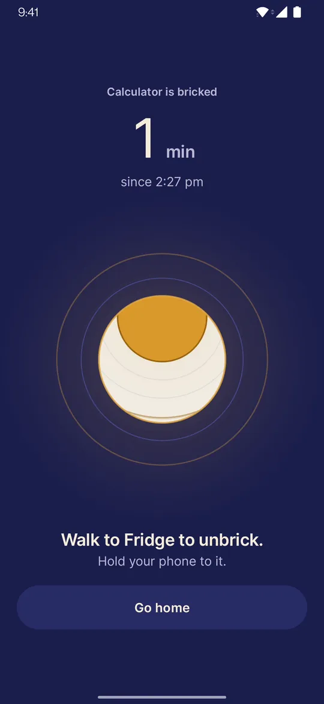
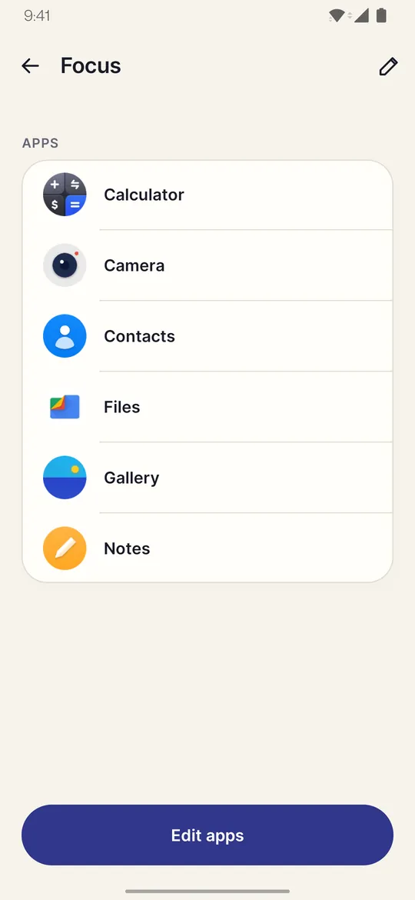
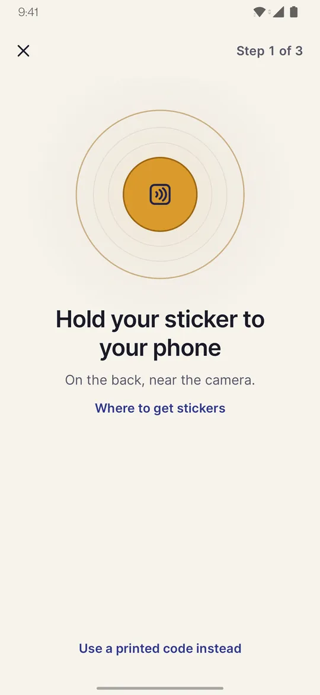
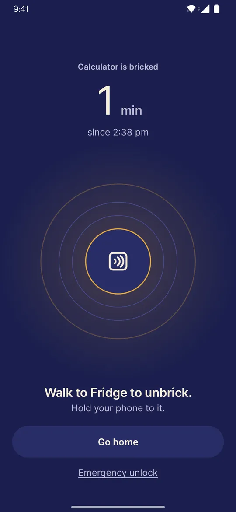
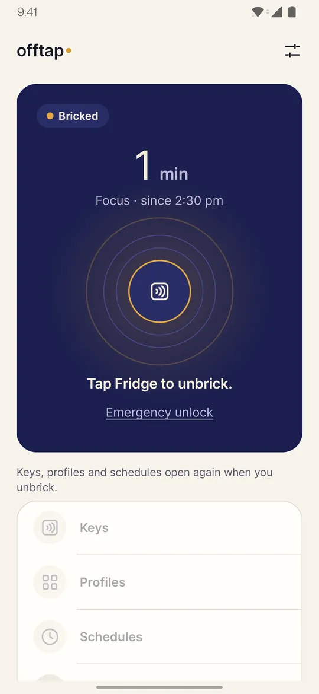
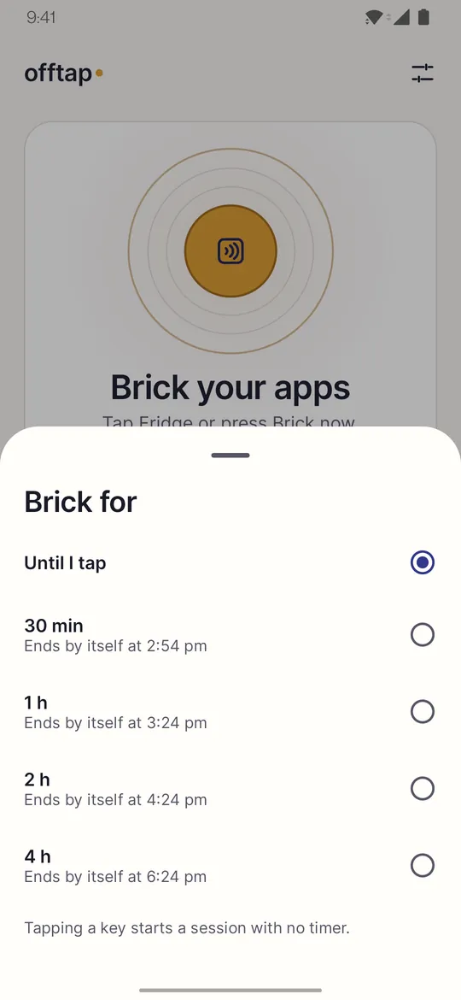
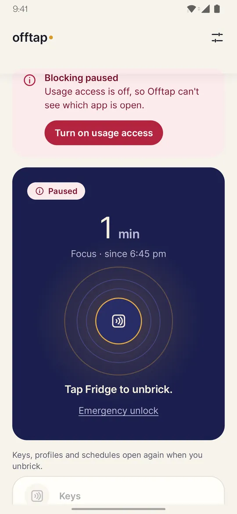
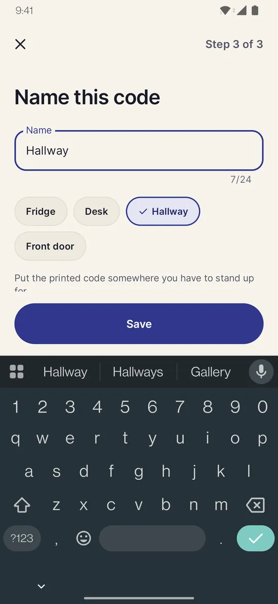

Tap to unlock. Honest by design.
Offtap blocks the apps you choose until you tap an NFC sticker you left somewhere else, or scan a printed code. Standing up and walking to the sticker is the feature.
Physical friction, zero data.
For Android 8.0 or newer, with an NFC sticker or a camera for a printed code.

Four steps. One small walk.
Pick your apps, start a session and put your phone down. To get the apps back, you walk to your tag and tap it.
Pick your apps
Choose the apps you want out of reach and save them as a profile.

Pair a tag
Hold an NFC sticker to your phone, or make a QR code you can print.

Start a session
Open a chosen app and Offtap covers it with a calm block screen.

Tap to unlock
Leave the tag in another room. Tap it, or scan your code, and your apps come back.
No sticker yet?
Offtap can make a printable QR code to use instead of a sticker, or alongside one. It works on any phone with a camera. A code is easier to get around than a sticker, and the app says so.
You are never stuck behind it.
Lose the tag, change your mind or just want it gone: every session has an exit that does not need the tag.
Emergency unlock
After a short wait, or by typing a sentence, you can unlock yourself a few times a month.
A 60 minute wait
When those are used up, you can still wait 60 minutes and your apps come back.
Uninstall any time
Offtap is not a lock you cannot undo. Remove it whenever you like.
Never behind a purchase
Locking and unlocking never depend on buying anything.
Nothing leaves your phone.
Offtap has no account system and no server. The list of apps you block stays on your device.
No account
No sign-up and no login. Install it and go.
No ads
Nothing to watch, nothing to dismiss.
No analytics
No analytics and no crash-reporting service in the app.
Stays on your phone
The apps you block and your sessions are stored only on this device.
No internet permission
Offtap has no permission to use the internet, so it cannot send anything out.
Cloud backup off
Android cloud backup is turned off for Offtap, so nothing is copied to your Google account.
Read the privacy policy for exactly what is stored and why each permission is needed.
Calm on purpose.
Swipe sideways to see more.
The block screen 
Home, during a session 
Timed sessions 
It tells you if blocking stops 
Name your tag or code Profiles of apps
Friction, not a lock.
Offtap adds friction. It is not a lock you cannot undo, and it says so up front.
- It blocks opening apps. It does not block websites or notifications.
- A printed code is easier to get around than a sticker. Anyone with a photo of it can unlock.
- Android or your phone maker can stop background apps. If that happens, Offtap tells you.
- On some phones (OnePlus, Oppo, Realme) an Offtap update or a restart can pause blocking until you open Offtap, unless you set Offtap to “Don’t optimise” in the phone’s battery settings. Offtap shows you that setting when you first set up.
- Offtap is a productivity tool, not a medical product. Do not rely on it for anything urgent.
Questions, answered plainly.
Does it need an NFC tag?
No. Offtap works with an NFC sticker (NTAG213, NTAG215 or NTAG216) on a phone with NFC, or with a QR code you print and scan with the camera. A printed code is easier to get around than a sticker, and the app says so.
What if I lose the tag?
An emergency unlock is available after a short wait or by typing a sentence, a few times a month. When those are used up, you can still wait 60 minutes. You can also uninstall Offtap at any time.
Does it work without internet?
Yes. Everything happens on your phone, and Offtap has no permission to use the internet.
What permissions does it ask, and why?
Usage access, to see which app is open while a session runs. Display over other apps, to show the block screen. Notifications, for a quiet session notice and a warning if Android stops blocking. Each one is explained in the app before Android asks, and you can decline. NFC and camera are optional. The privacy policy lists every permission.
Is it free?
Free to use; optional Pro adds extras. Google Play shows details.
Which phones does it work on?
Android 8.0 or newer. You need either a phone with NFC and a sticker, or a camera to scan a printed code.
Who is it for?
Offtap is intended for people aged 18 and over.
Put your phone down. Go and tap it back.
No account, no ads, nothing leaves your phone.
Android 8.0 or newer. For people aged 18 and over.